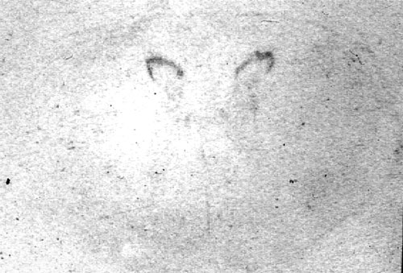
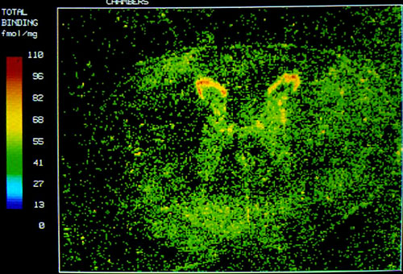
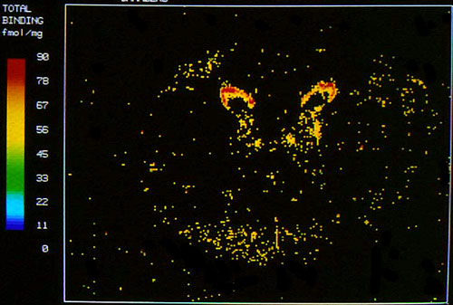

Measurement - autoradiography
|  | Autoradiograph of a section of horse cervical spinal cord. Dark areas show increased radioactivity from 3H clonidine binding to α2 receptors in the substantia gelatinosa. |
|  | Computerised autoradiograph showing colourised total binding. |
|  | Computerised autoradiograph showing specific binding (total binding minus non-specific binding). |
copyright Massey University